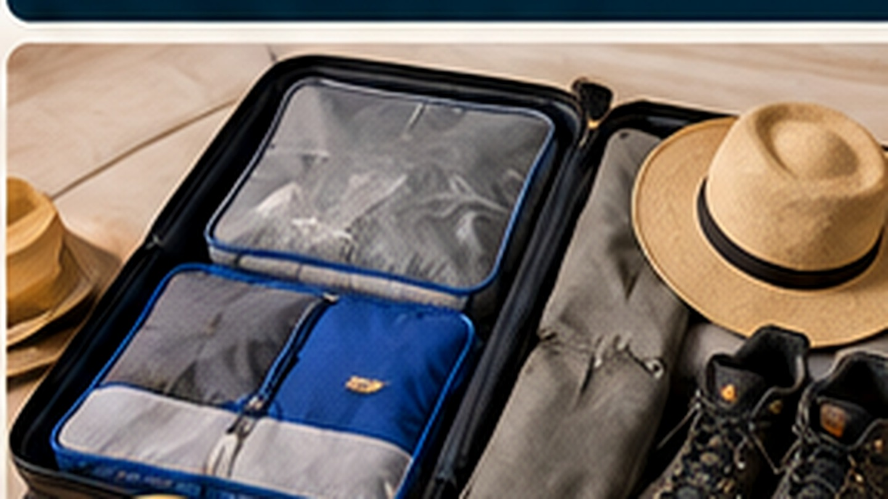

01
Schichtenprinzip
Leichte Kleidung mit einer wärmeren Schicht für Morgen, Abend und Hochland kombinieren.
Eine gute Packliste orientiert sich an Route, Höhenlage und Reiseart. Ziel ist nicht möglichst viel Gepäck, sondern das Richtige griffbereit zu haben.

Übersichtlich, praktisch und auf die Reisevorbereitung ausgerichtet.
Leichte Kleidung mit einer wärmeren Schicht für Morgen, Abend und Hochland kombinieren.
Bequeme, eingelaufene Schuhe passend zu Wanderungen und Untergrund wählen.
Sonnenbrille, Kopfbedeckung und Sonnenschutzmittel einplanen.
Wasser, Kamera, Dokumente und persönliche Dinge bequem transportieren.
Eine gute Packliste orientiert sich an Route, Höhenlage und Reiseart. Ziel ist nicht möglichst viel Gepäck, sondern das Richtige griffbereit zu haben.
Ein sinnvoller Ablauf hilft, wichtige Punkte rechtzeitig zu erledigen.
Nach Route, Aktivitäten und Klima strukturieren.
Gewicht und fehlende Dinge rechtzeitig erkennen.
Dokumente, Medikamente und Wertsachen noch einmal kontrollieren.
Bei einer persönlichen Reiseplanung können wir Ihnen Hinweise passend zu Ihrer Route und Reiseart geben.